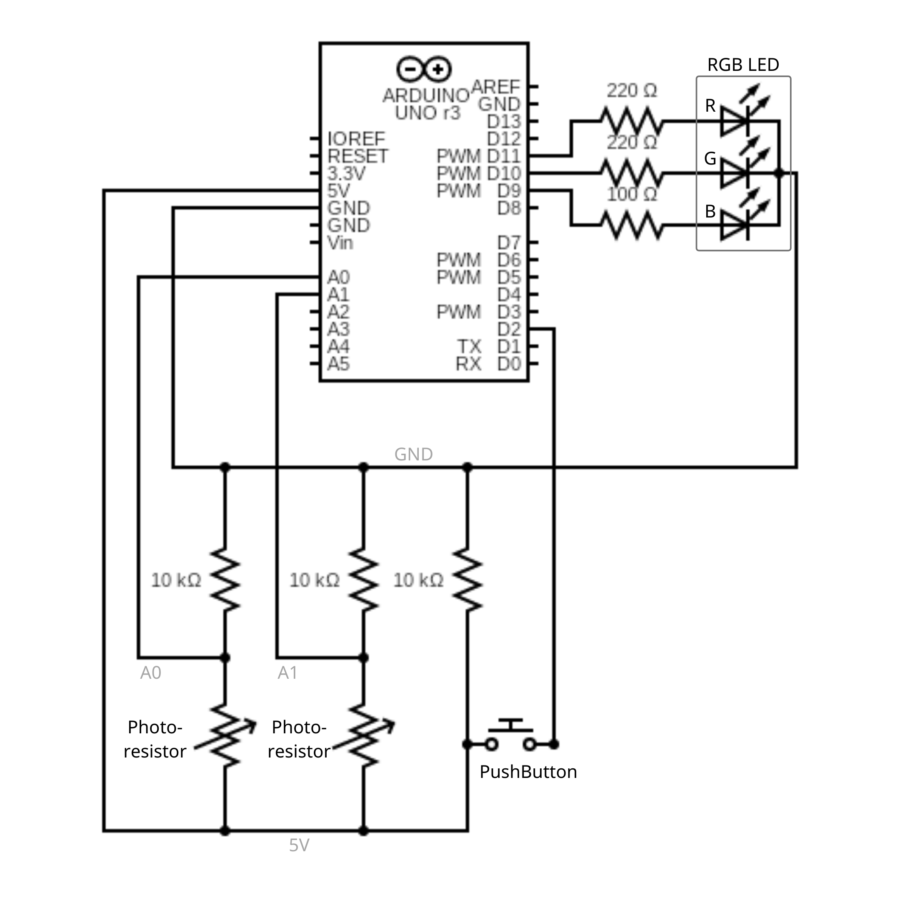
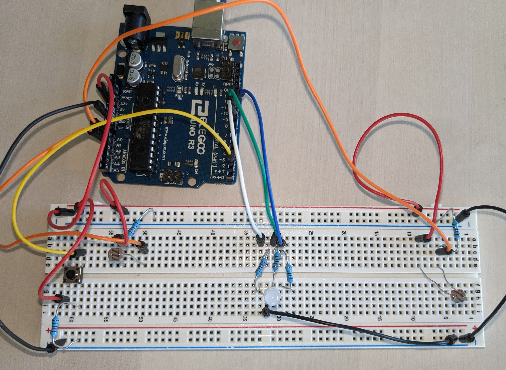

A3: Input Output!
Kierra Long
Schematic
This is my schematic of the circuit. It has 4 main components: A pushbutton, two photoresistors, and one RGB LED.
The photoresistors are connected through a voltage divider to be able to measure the voltage through pins A0 and A1.
The PushButton is connected to 5V Power and ground from one side, and Pin 2 from the other, to sense when the button is pressed.
The RGB LEDs are connected to pins 9, 10, 11, (with corresponding resistors for color value) and ground.
The Pins from the arduino are 5V when on high, so I used Ohms law to calculate
the resistor current for each LED. The calculations are as follow:
For Blue LEDs:
(5V-3.3V)=(0.02A)(X)
(1.7V)=(0.02A)(X)
X=85 Ohms
Round up to 100 Ohm resistor.
For Green, Yellow, Red LEDs:
(5V-1.8V)=(0.02A)(X)
(3.2V)=(0.02A)(X)
X=160 Ohms
Round up to 220 Ohm resistor.
After passing through the LEDs, all wires connect back to Ground.
The 10K resistor for the PushButton and photoresistors was chosen to provide an ample amount of resistence to keep the current quite small.
Created with https://www.circuit-diagram.org/ & Canva
Using the multimeter, the resistances I measured for the photoresistor were 55K Ohm and 135K Ohm. Below is a photo solving for the expected voltage output of V out.
Circuit
This is the circuit based off of the previous schematic, made using a breadboard and Arduino.
Code
//Sources:
// Calibration: Arduino Example code
// Smoothing: Arduino Example code
// PushButton: Arduino Example code
//pins
const int left = A1; // the sensor pin for the photoresistor on the left
const int right = A0; // the sensor pin for the photoresistor on the right
const int buttonPin = 2; // the pin that senses the buttton
const int R = 9; // the number of the blue part of the LED, output
const int G = 10; // the number of the green part of the LED, output
const int B = 11; // the number of the red part of the LED, output
//variables
int sensorValueL = 0; // the sensor value for callibration left
int sensorValueR = 0; // the sensor value for callibration right
int sensorMinL = 1023; // the minimum sensor value for callibration left
int sensorMaxL = 0; // the maximum sensor value for callibration left
int sensorMinR = 1023; // the minimum sensor value for callibration right
int sensorMaxR = 0; // the maximum sensor value for callibration right
int buttonState = 0; // variable for reading the pushbutton status
const int numReadings = 10; // number of readings for smoothing
//for left pin
int readings1[numReadings]; // array of readings from the analog input
int readIndex1 = 0; // the index of the current reading
int total1 = 0; // the running total of values
int average1 = 0; // the average value
int inputPin1 = A1; // the pin for the averaging
//for right pin
int readings[numReadings]; // array of readings from the analog input
int readIndex = 0; // the index of the current reading
int total = 0; // the running total of values
int average = 0; // the average value
int inputPin = A0; // the pin for the averaging
void setup() {
Serial.begin(9600);
// smoothing array, for if I try and use it
for (int thisReading = 0; thisReading < numReadings; thisReading++) { //
readings[thisReading] = 0;
}
// calibration
// left sensor
while (millis() < 5000) { //for 5 seconds
sensorValueL = analogRead(left); //look at sensor value of left
if (sensorValueL > sensorMaxL) { // if larger than current max
sensorMaxL = sensorValueL; // set as the maximum sensor value
}
if (sensorValueL < sensorMinL) { //if smaller than current min
sensorMinL = sensorValueL; // set as the minimum sensor value
}
}
// right sensor
while (millis() < 10000) { //for 5 more seconds
sensorValueR = analogRead(right); //look at sensor value of right
// Serial.println(sensorValueR);
if (sensorValueR > sensorMaxR) { // if larger than current max
sensorMaxR = sensorValueR; // set as the maximum sensor value
}
if (sensorValueR < sensorMinR) { //if smaller than current min
sensorMinR = sensorValueR; // set as the minimum sensor value
}
}
digitalWrite(13, LOW); // signal the end of the calibration period
//pinmodes
int y[] = {R,G,B}; // array of the pins
for (int x=0; x<3; x++) { //for loop through whole array
int pin = y[x]; //pull out pin number
pinMode(pin, OUTPUT); // initialize the LED pin as an output
}
pinMode(buttonPin, INPUT); // initialize the pushbutton pin as an input
}
void loop() {
buttonState = digitalRead(buttonPin); // read the state of the pushbutton value
int brightness = 155; // Set overall brightness
if (buttonState == HIGH) { // check if the pushbutton is pressed. If it is, the buttonState is HIGH
int leftValue = analogRead(left); // read the value of left photoresistor
int rightValue = analogRead(right); // read the value of right photoresistor
//int rightValue = average;
//int leftValue = average1;
analogWrite(R, 0); // set red value to 0
int greenValue = leftValue; //new variable for green value
greenValue = constrain(greenValue, sensorMinL, sensorMaxL); //constrain green value to to callibrated values
greenValue = map(greenValue, sensorMinL, sensorMaxL, 0, brightness); //map green value based on voltage of left sensor
greenValue = constrain(greenValue, 0, brightness); // constrain again just to be sure
analogWrite(G, (brightness - greenValue)); //output green color to LED
int blueValue = rightValue; //new variable for blue value
blueValue = constrain(blueValue, sensorMinR, sensorMaxR); //constrain blue value to to callibrated values
blueValue = map(blueValue, sensorMinR, sensorMaxR, 0, brightness); //map blue value based on voltage of right sensor
blueValue = constrain(blueValue, 0, brightness); // constrain again just to be sure
analogWrite(B, (brightness -blueValue)); //output blue color to LED
Serial.println(buttonState);
Serial.print("left-value: ");Serial.print(leftValue);Serial.print(" right-value: ");Serial.print(rightValue);
Serial.print(" green-value: ");Serial.print(greenValue);Serial.print(" blue-value: ");Serial.print(blueValue);
Serial.print(" left range: [");Serial.print(sensorMinL);Serial.print(", ");Serial.print(sensorMaxL);
Serial.print("] right range: [");Serial.print(sensorMinR);Serial.print(", ");Serial.print(sensorMaxR);
Serial.println(); //Print to serial port
delay(5);
}
else {
int leftValue = analogRead(left);
int rightValue = analogRead(right);
analogWrite(R, 255); // set red value to 255
int greenValue = leftValue; //new variable for green value
greenValue = constrain(greenValue, sensorMinL, sensorMaxL); //constrain green value to to callibrated values
greenValue = map(greenValue, sensorMinL, sensorMaxL, 0, brightness); //map green value based on voltage of left sensor
greenValue = constrain(greenValue, 0, brightness); // constrain again just to be sure
analogWrite(G, (brightness - greenValue)); //output green color to LED
int blueValue = rightValue; //new variable for blue value
blueValue = constrain(blueValue, sensorMinR, sensorMaxR); //constrain blue value to to callibrated values
blueValue = map(blueValue, sensorMinR, sensorMaxR, 0, brightness); //map blue value based on voltage of right sensor
blueValue = constrain(blueValue, 0, brightness); // constrain again just to be sure
analogWrite(B, (brightness -blueValue)); //output blue color to LED
Serial.print("left-value: ");Serial.print(leftValue);Serial.print(" right-value: ");Serial.print(rightValue);
Serial.print(" green-value: ");Serial.print(greenValue);Serial.print(" blue-value: ");Serial.print(blueValue);
Serial.print(" left range: [");Serial.print(sensorMinL);Serial.print(", ");Serial.print(sensorMaxL);
Serial.print("] right range: [");Serial.print(sensorMinR);Serial.print(", ");Serial.print(sensorMaxR);
Serial.println();
delay(5);
}
}
Operation


This is a gif of the operation of the circuit. The program takes inputs from the two photoresistors and the button and outputs different values to the RGB LED.
Basically, the LED starts off as red and the color changes as the light changes in either photoresistor.
Covering the right photoresistor adds blue light to the red light, so it fades to purple.
Covering the left photoresistor adds green light to the red light, so it fades to yellow.
Covering them both makes the light go close to white, but still more red (because green and blue go only up to 100).
If you hold down the button, the red light turns off, so the light will fade between just green or blue.
This program also auto-calibrates the photoresistors for the first 10 seconds of the program (5 each) for more accurate voltage readings
and smoother fading.